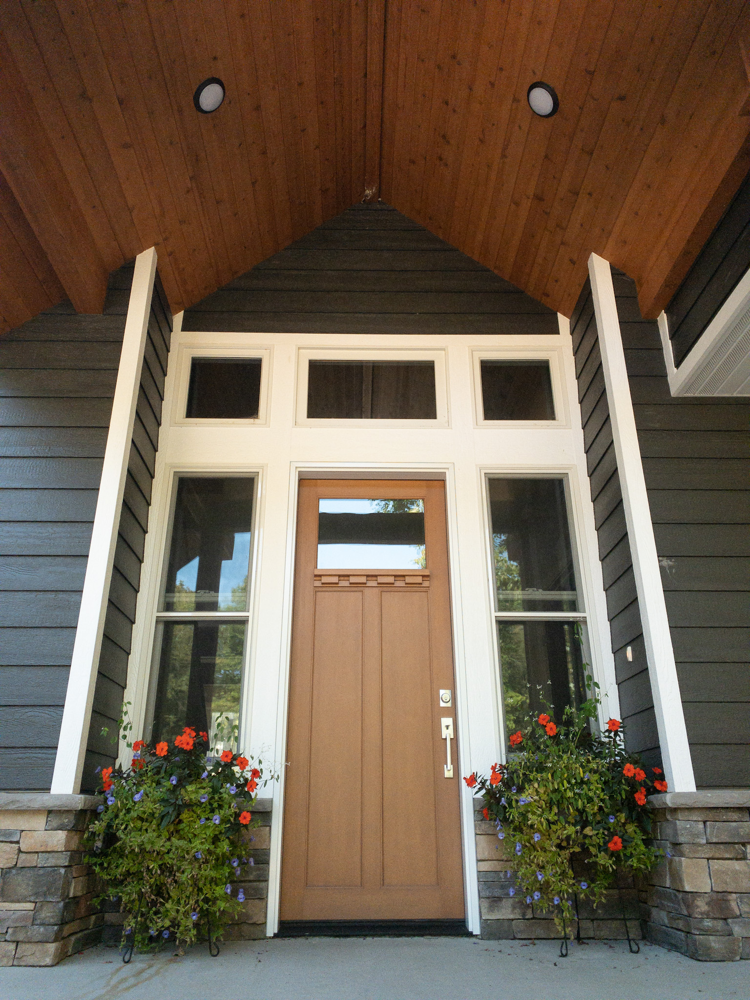
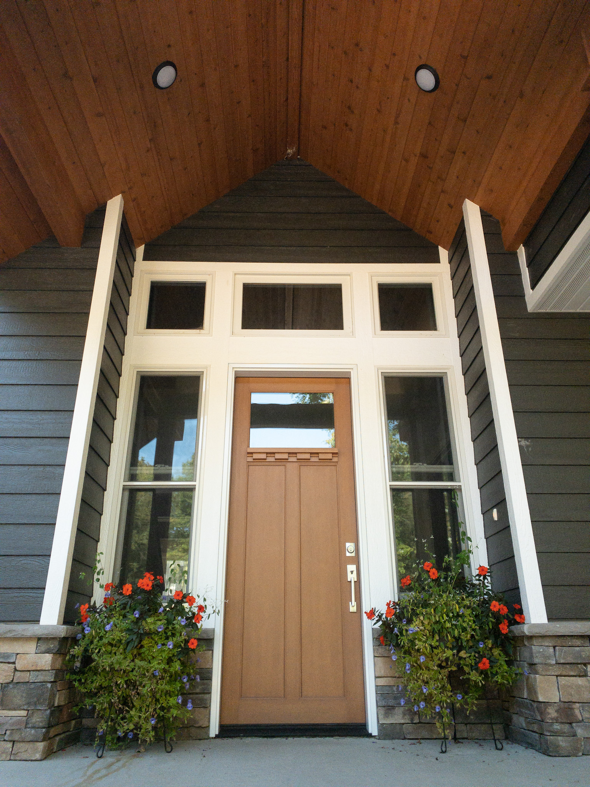
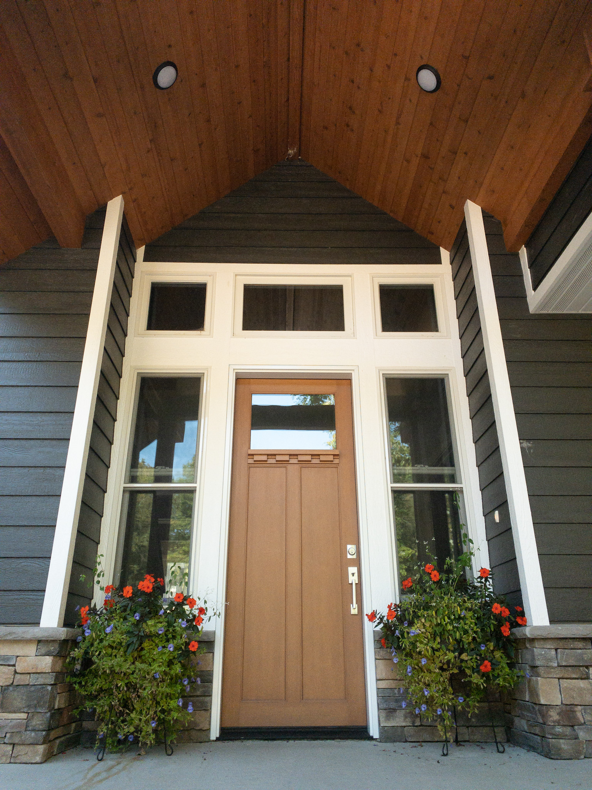

Last semester, I was enrolled in the course Communication Arts 155. This course is designed to introduce students to various digital media platforms including photography, podcast, webistes, and video production.
For the photography assignment, we were assigned to capture ten photos following specific photography techniques. I used this project to explore my aesthetic and challenged my creative limits while being at home due to the COVID-19 Pandemic. The three photos below are some of my personal favorites.
